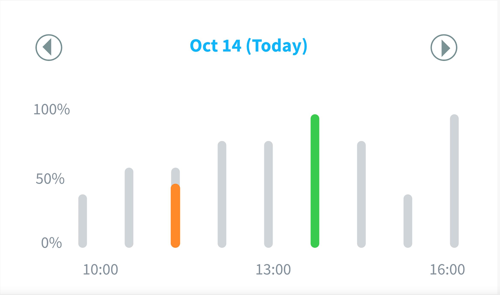

Rebranding
Our first task was to perform a major UI overhaul on the existing app design to better reflect Mindcurrent as a brand and to better suit the target audience.
These are screenshots of what the app looked like before we got our hands on it.

For the majority of my internship with Mindcurrent, we were iterating on the main product, Mindcurrent’s mobile app. The purpose of this app is to provide a platform for individuals to predict and manage their performance levels. The prediction is based on an integration of the user’s work calendar and biometrics data from a device such as an Apple Watch. The user can manage their performance, or stress levels, by partaking in daily stress busters and micro learnings.
Our first task was to perform a major UI overhaul on the existing app design to better reflect Mindcurrent as a brand and to better suit the target audience.
These are screenshots of what the app looked like before we got our hands on it.
We were provided with a new color palette that would better fit who Mindcurrent is and what they do. This process consisted of many iterations and tweaks to come up with the correct use of the new color palette. I was able to create and propose the final design for the new look.
The new color palette created a light, airy feel and instilled a sense of trust in the brand.

Before
To start off, the prediction graph was a pain point for users because it was hard to read and the data was confusing. Looking at the graph it was difficult for users to tell what the levels meant, what the colors represented, and to discern what data they had entered and what data was the prediction.

The Process
I collaborated with the UX design team to create several wireframes of possible designs. Our goal was to present the data in an intuitive format so that the user would be able to know what the graph was without having to do any work.
Final Design
We decided on a final design that was the most user centered and would create an excellent user experience. By adding the percentages on the left axis it makes it easy to discern what the height of the bar means. Using the colors the user inputs at performance check-in created a simple way to let the user know their data inputs are being shown.
The Process
I was given the lead on designing how to present the user’s heart rate data prediction and the data they input. Before this project, there was no way for the user to see the heart rate data they would enter or the prediction based on their performance levels.
Iteration of the heart rate prediction and data.
Final Design
The final design we decided on incorporated a heart rate range on the left axis that would be personalized to the user. The user’s inputted data would be presented as vertical bars similar to the performance prediction graph but would provide enough distinction so as not to get confused with the adjacent graph.
Final design incorporating heart rate prediction and user input